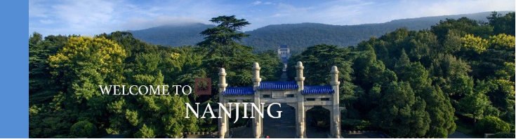

中 山 陵
The Sun Yat-sen Mausoleum
玄武区紫金山
南麓
中山陵前临平川，背拥青嶂，东毗灵谷寺，西邻明孝陵，整个建筑群依山势而建，由南往北沿中轴线逐渐升高，主要建筑有博爱坊、墓道、陵门、石阶、碑亭、祭堂和墓室等，排列在一条中轴线上，体现了中国传统建筑的风格，从空中往下看，像一座平卧在绿绒毯上的“自由钟”。融汇中国古代与西方建筑之精华，庄严简朴，别创新格。
中山陵各建筑在型体组合、色彩运用、材料表现和细部处理上均取得极好的效果，音乐台、光华亭、流徽榭、仰止亭、藏经楼、行健亭、永丰社、永慕庐、中山书院等建筑众星捧月般环绕在陵墓周围，构成中山陵景区的主要景观，色调和谐统一更增强了庄严的气氛，既有深刻的含意，又有宏伟的气势，且均为建筑名家之杰作，有着极高的艺术价值，被誉为“中国近代建筑史上第一陵”。
门票价格 ：免费
适宜游玩季节：四季皆宜